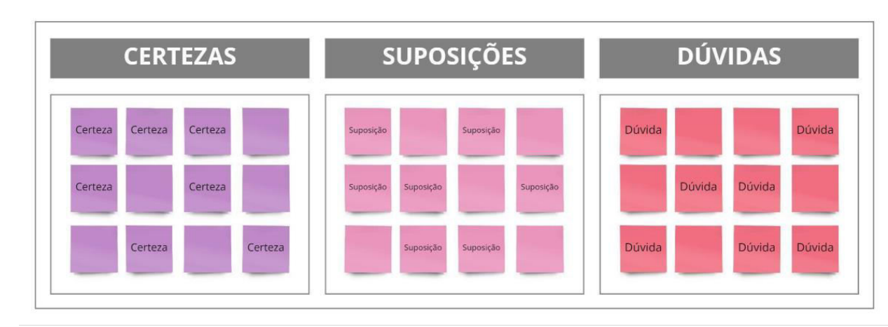
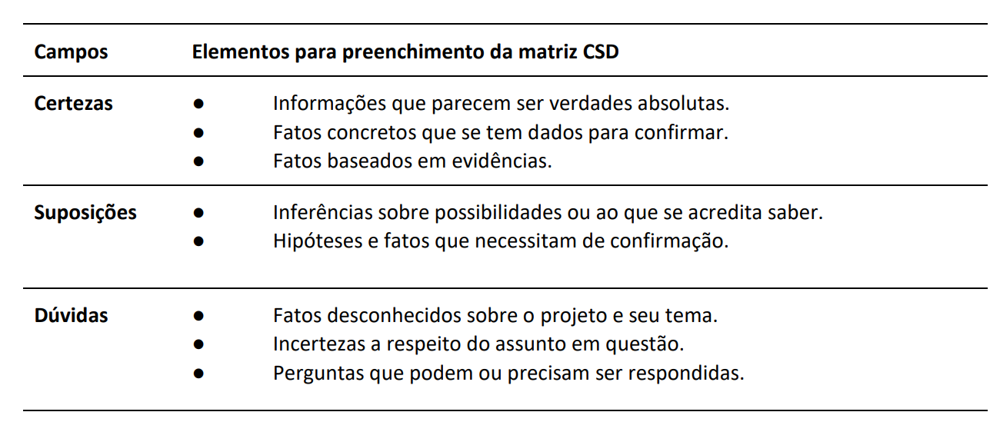
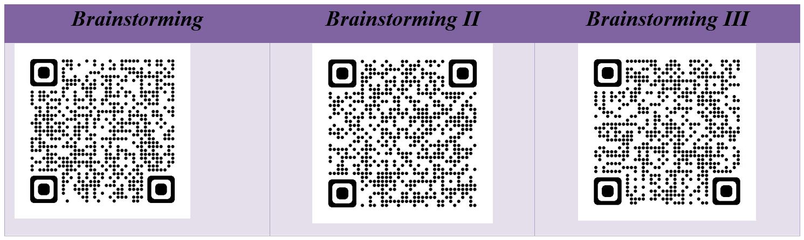

Para Rocha (2018), a etapa de ideação “consiste em gerar e refinar ideias”. Para que isso ocorra, é necessário conhecer melhor o problema a ser solucionado. Para isto, é essencial pesquisar sobre o nosso público. Eis algumas ferramentas que irão ajudar na pesquisa e solução do problema: Matriz CSD, questionário, o mapa da empatia e Brainstoming.
E o que é a Matriz CSD? Sua sigla significa Matriz de Certezas, Suposições e Dúvidas. Esta matriz é uma ferramenta que busca conectar pontos, organizar informações e, principalmente, dar um norte para solucionar o problema.
Para Forceline e Marino (2022, p. 2), a matriz CSD ajuda a definir o que são certezas, suposições e dúvidas:
Na etapa inicial de um projeto, a qual está relacionada à descoberta de novas perspectivas, podem ser utilizadas ferramentas para se obter dados e percepções iniciais. Uma dessas possíveis ferramentas, especialmente útil no início de um projeto, é a Matriz CSD, cujo acrônimo se refere às palavras: certezas (C), suposições (S) e dúvidas (D). Desenvolvida pela Livework, essa ferramenta auxilia a promover uma discussão em equipe para levantar o que é conhecido sobre o contexto do projeto, o que é hipotético e o que é desconhecido.
Veja abaixo o resumo do que seja Certeza, Suposições e Dúvidas elaborado por Forceline e Merino (2022):
Feita a Matriz CSD, o aluno irá montar o questionário da Pesquisa. É de extrema importância conter, nesse questionário, as Suposições e Dúvidas que a equipe precisa conhecer. Algumas dicas no momento de montar o questionário:
- Identifique o que você deseja cobrir na pesquisa. A clareza no assunto tem maior importância, pois é o primeiro passo na elaboração da mesma.
- Escolha as palavras corretas. É essencial que, ao criar o questionário, as palavras ou frases usadas sejam fáceis de entender.
- Faça apenas uma pergunta por vez.
- Seja flexível com suas opções. Às vezes, o entrevistado não deseja necessariamente escolher entre as opções de resposta que foram fornecidas pelo criador da pesquisa. Em uma situação assim, é interessante ter o tópico “outro(s)” como opção.
- Perguntas abertas ou fechadas. Considere a finalidade do questionamento e dê as opções mais adequadas de resposta.
- É importante conhecer o seu público para fazer um questionário. Se o público estudado, por exemplo, fala a língua espanhola, o envio das pesquisas precisa ser feito no idioma adequado.
- Escolha bem a ferramenta. Uma opção gratuita e muito utilizada é o Google Forms, ou apenas Formulário do Google.
Com base na pesquisa, é possível definir o Mapa da Empatia. Esta é uma ferramenta visual que analisa e descreve, por meio de um diagrama, os aspectos comportamentais e o contexto de vida da pessoa e da comunidade que pretende trabalhar. Com esse recurso, é possível desenhar o cenário, os pensamentos, as ações, os problemas e as necessidades do seu público-alvo (Rocha, 2018).
 O Mapa da Empatia é formado por 6 quadrantes que terão como foco o seu cliente, a pessoa que precisa da solução
O Mapa da Empatia é formado por 6 quadrantes que terão como foco o seu cliente, a pessoa que precisa da solução
O protagonista do Mapa é um só: sempre uma pessoa. O público-alvo pode ser usuários de aplicativos e consumidores de serviços, ou seja, qualquer um que seja atendido pela solução. Para Brown (2020, p. 55), a empatia no “Design Thinking” tem por objetivo conhecer a realidade do outro para gerar insights (percepções), isto é, novas ideias para melhorar a vidas das pessoas: “A missão do Design Thinking é traduzir observações em insights, e, estes insights, em produtos e serviços para melhorar a vida das pessoas”.
Após o mapa da empatia, Matriz CSD e Pesquisa é hora de pensar a solução para o problema. Sugere-se o uso da ferramenta Brainstorming. Abaixo foram selecionados três vídeos sobre essa ferramenta para ajudá-lo./p> 
Com base no exemplo dado sobre a realidade da jovem Ludmila Sá, constata-se que a equipe está buscando uma solução para o problema dela e já percorreu as seguintes etapas:
- Produziu a Matriz CSD;
- Depois, elaborou e aplicou um questionário na comunidade que sofria com o odor de resíduo animal.
- Construiu o Mapa de Empatia, ou seja, buscou saber: O que Ludmila Sá vê? O que Ludmila Sá ouve? O que Ludmila Sá fala? Quais são as dores de Ludmila Sá? Quais são suas necessidades?
Após a análise do Mapa de Empatia, Matriz CSD e Resultado e brainstorming sobre a melhor solução para o problema, chegou-se à seguinte solução: “Criar um biodigestor de baixo custo para reduzir poluição de resíduo animal na natureza, no município de Coroatá, e, assim, diminuir o impacto na vida da comunidade”. Se, porventura, essa ideia for aceita pela comunidade, avança-se para a fase seguinte. Caso contrário, busca-se uma nova ideia.
Home